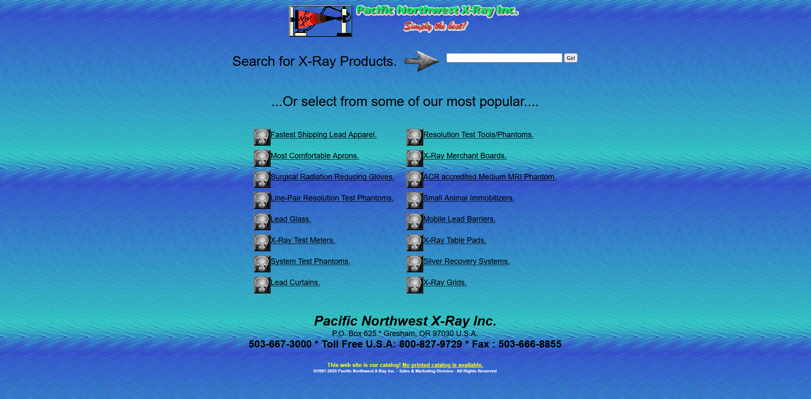

Screenshot
Why this UI is terrible
This interface has a harsh gradient background that strains the eyes and distracts from the content. The text alignment is inconsistent, and the links are cluttered together with no visual hierarchy. The design lacks whitespace and accessibility considerations such as readable fonts and color contrast.
Improvements: Simplify the color palette, remove distracting backgrounds, and apply consistent fonts and spacing. Group related items together and use modern responsive layout techniques. Overall, the goal should be to create a cleaner, accessible, and user-friendly design.